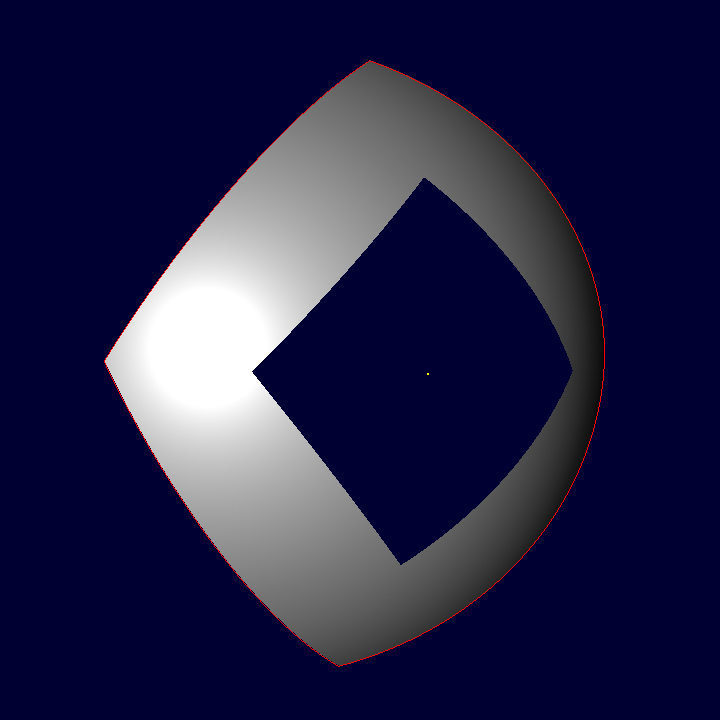
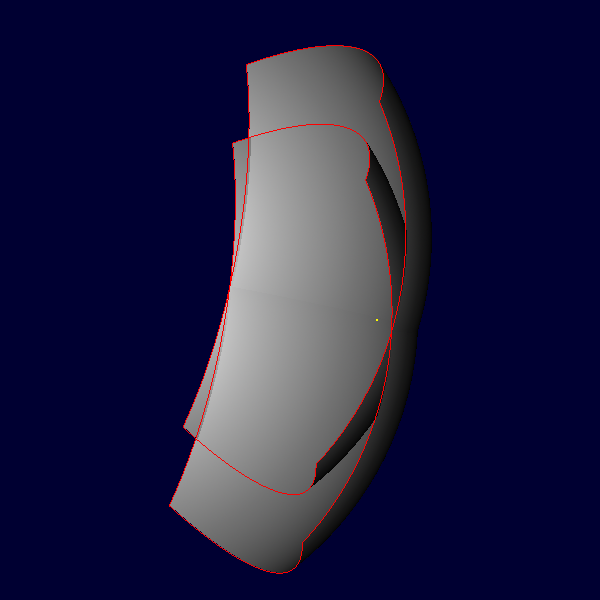
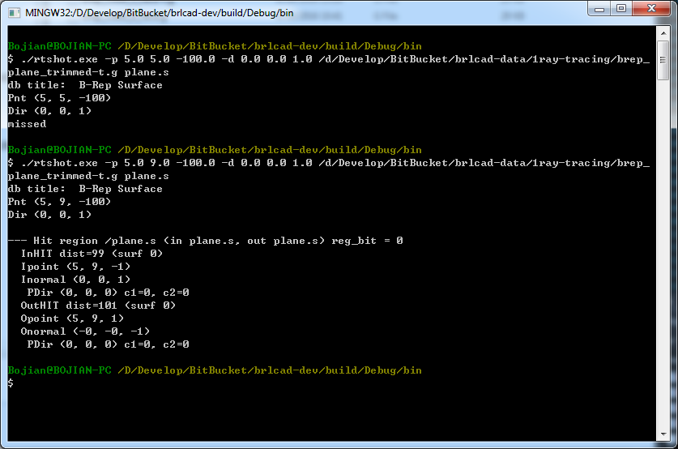
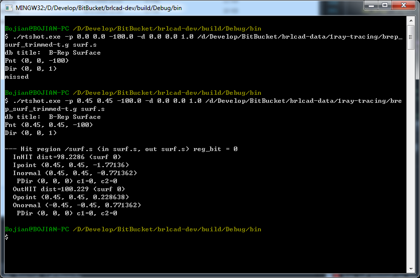

As VR(Virtual Reality) and 3D printing become more popular, in this year SIGGRAPH, the exhibitions have been mostly dominated by VR devices, their experience and applications, like Google, Nvidia, Microsoft etc. There is a 'VR Village' and it is a collection of all kinds of interesting applications developed with Oculus, HTC Vive, Google Tango etc.
Besides, the slogon of this year is "Render the Possibilities", so rendering should also play an important role. Actually, which impressed me most was Uncharted 4(a game developed by Naughty Dog), it showed a lot of rendering techniques that really made each frame in the game realistic. At present, the rendering techniques almost focus on GI(Global Illumination) and real time rendering. It occurred to me that there was a session called "Real Time Live!", each company/academic institution had several minutes to show their lastest technique like rendering/gaming/modeling/film making and applications, it was totally real time and very impressive.
Certainly, 'Computer Animation Festival' is the most attractive session each year.
I use openNURBS API to generate trimmed B-rep surface directly, here are two examples including trimmed plane and trimmed cobb surface(only one patch). Actually, in order to use its built-in API, firstly I need to understand its basic data structure, please refer to the offical tutorial for more details. Besides, this repo gives many examples on how to use these APIs and generate different kinds of surfaces.
As shown below, the result is the ray-tracing of trimmed surface, and an overlay B-rep surface.
|  |  |
Below is the result of 'rtshot'. For ray shooting the trimmed area of B-rep surface, it will give 'miss' as shown in the demos or it will compute the hit points pair as it usual does.
|  |  |
{kind=link}
{kind=link}